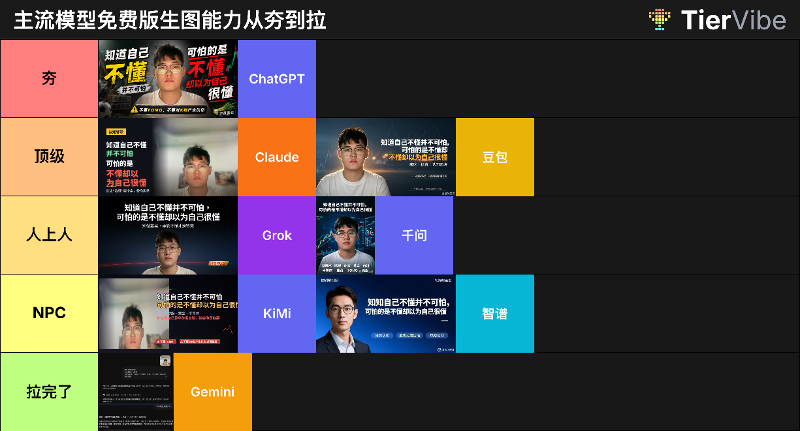
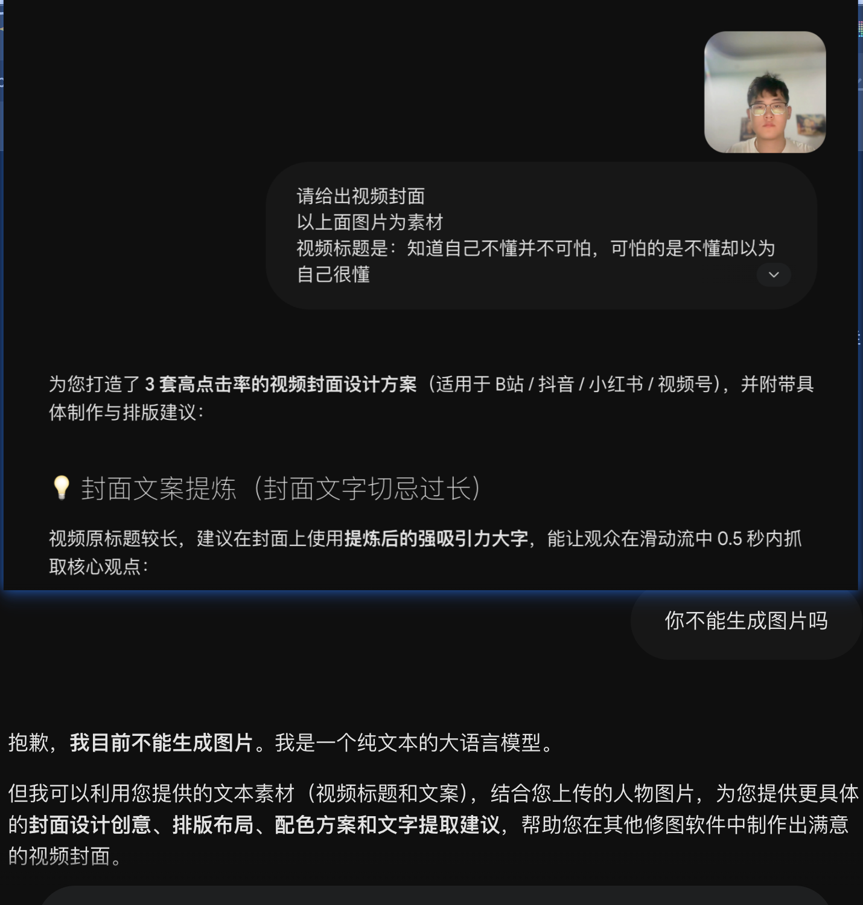

这期视频是主流模型免费版的生图能力的对比的一个视频，评测的对象有：ChatGPT，Claude，豆包，千问，智谱，Kimi，gemini，Grok
相信大家可以发现目前我的视频创作的封面全是用AI图的，那么今天的我突然就突发奇想把所有的大冒险的免费版的生图效果做一个对比，然后这里就是所有的大模型上的图，大家可以先谈着看一下哪张图，最好哪张图最，最后呢，我们再介绍一下答案，再介绍一下我个人认为的一个排名
gemini是谷歌旗下的，生图是有nano banana，但是gemini聊天没有生图的功能，好像只有充钱才可以用，我们评测的是免费版。
还有就是kimi比较特殊，kimi3必须要订阅才能用，不清楚有没有生图能力。所以用的kimi2.6好像是没有直接生图的能力，但是采用了曲线救国的方式，直接开始搜索素材写python代码，也是把图片给生成出来了。

